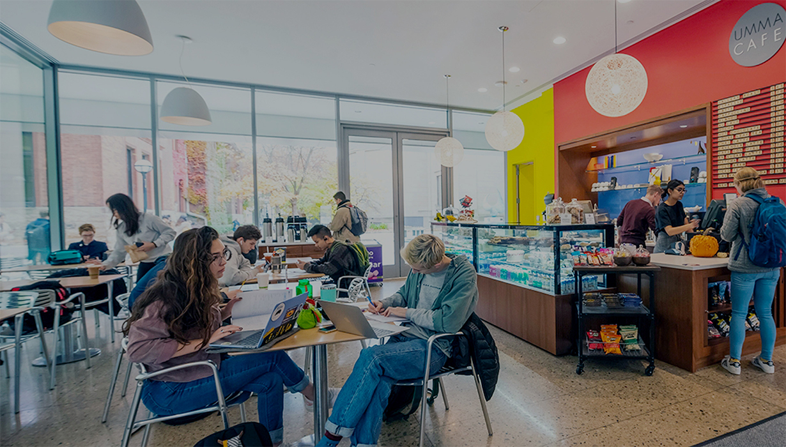
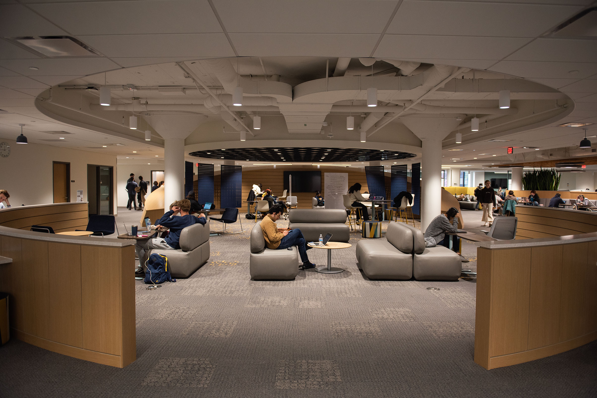
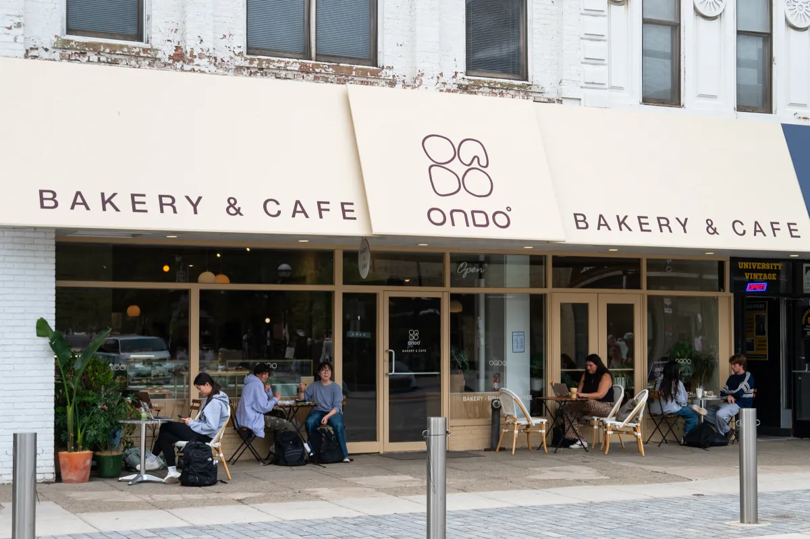
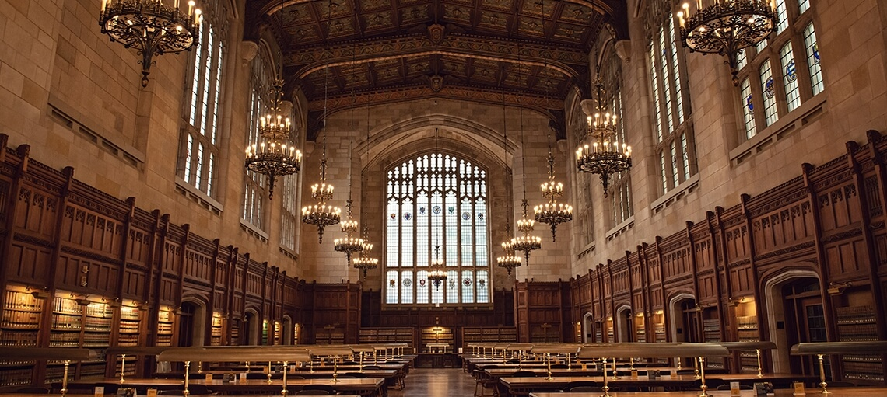
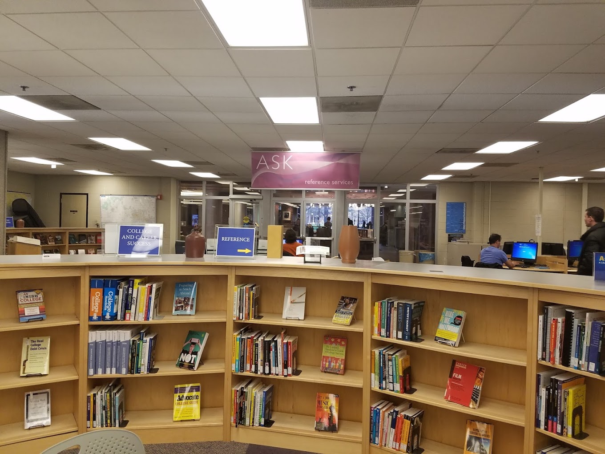

The University of Michigan has many great study spaces around campus.
Social Study Places

UMMA Cafe
UMMA Cafe is great for students that need to be near the center of campus and want to grab some food. The bright atmosphere makes the space feel happy

UGLI 3rd Floor (Clark Commons)
Freshly remodeled, the 3rd Floor of the UGLI is a great semi-quiet space to get work done. There are large tables for studying with friends and smailler cubicles for independant study.

ONDO Cafe
The new Ondo cafe is a great place to study while getting some food on campus.
Quiet Study Places

Law Library
The Law Library located in the Law Quadrangle offers a large silent study space.

UGLI 2nd Floor
With a completely different atmostphere from the 3rd floor, the UGLI's second floor is a quieter space to study on campus.